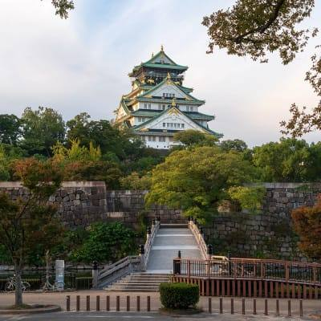
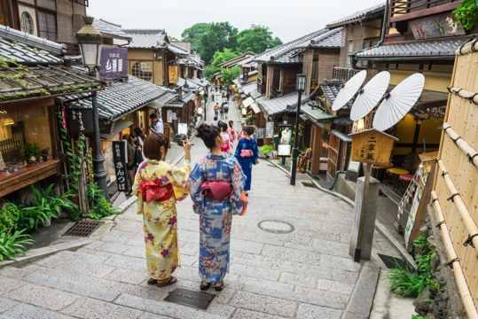
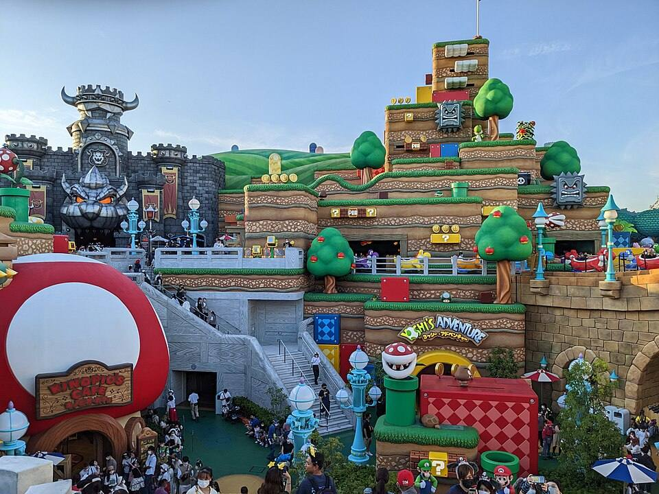
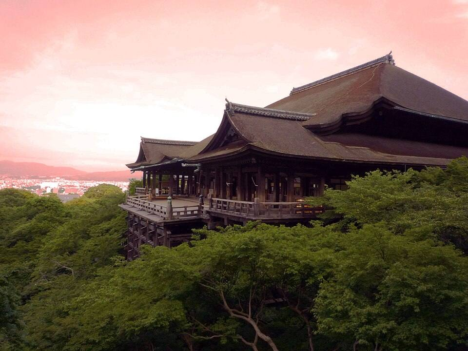
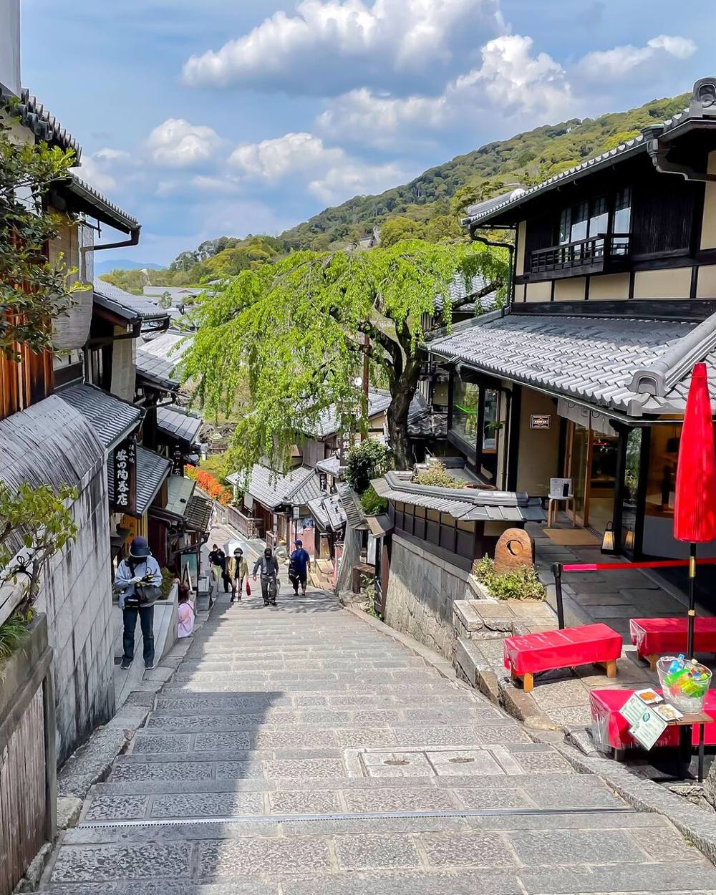
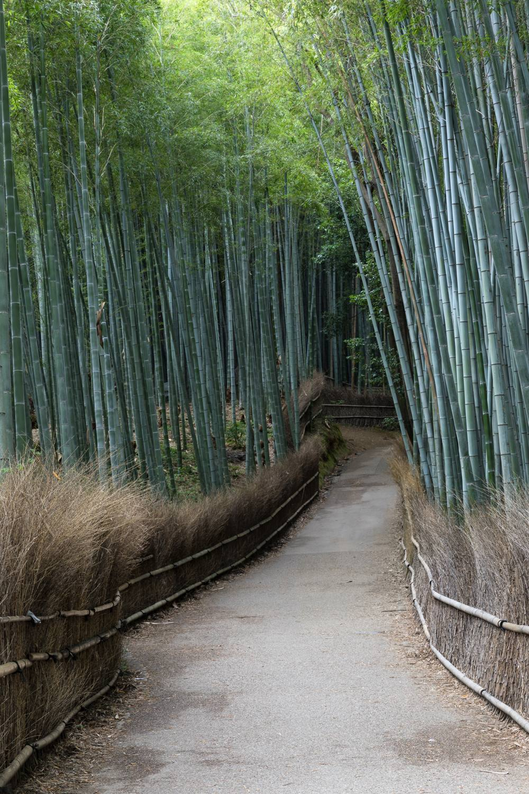
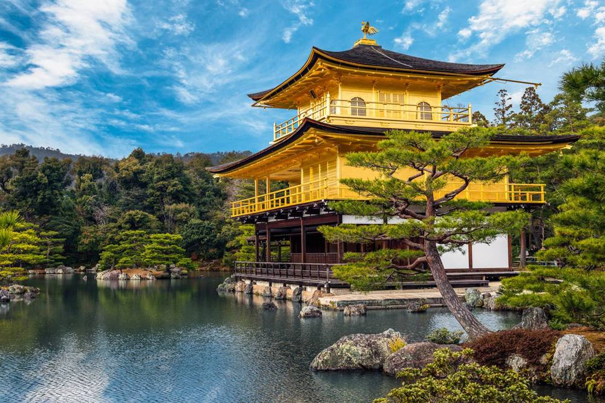
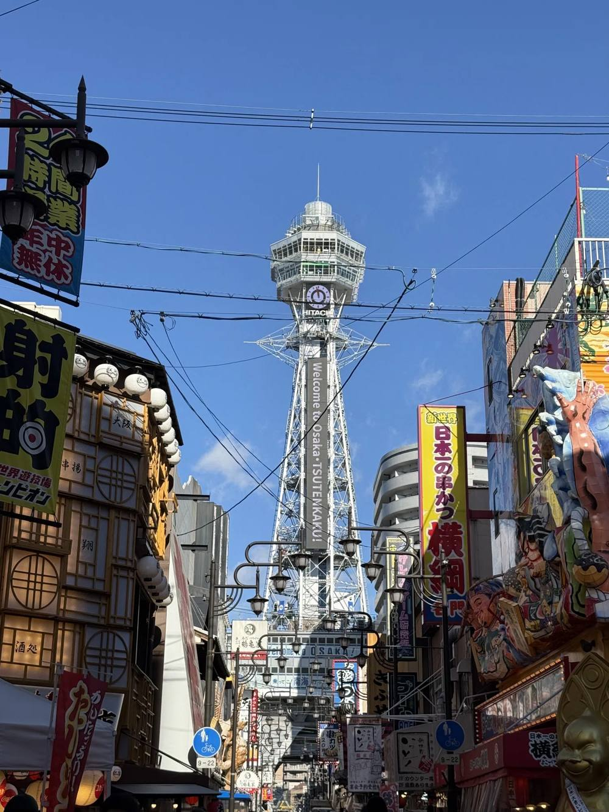

🏯 오사카성
오사카를 대표하는 성. 천수각 내부는 역사 전시 공간이고 위에서는 오사카 시내를 내려다볼 수 있어요.

오사카를 대표하는 성. 천수각 내부는 역사 전시 공간이고 위에서는 오사카 시내를 내려다볼 수 있어요.

쇼핑거리에서 글리코상·네온사인·먹거리가 몰린 도톤보리까지 이어지는 대표 저녁 코스.

영화·게임 세계를 실제 공간처럼 만든 오사카 대표 테마파크. 놀이기구뿐 아니라 테마거리·쇼·캐릭터·음식까지 즐겨 하루 코스로 잡기 좋아요.

산중턱에 자리한 교토 대표 사찰. 산비탈 위의 큰 목조 무대와 교토 전망이 유명해요.

기요미즈데라 아래 전통거리. 목조 상점·찻집·디저트·기념품점을 구경하며 내려오는 코스.
전통 골목을 산책하고 저녁·쇼핑으로 마무리하기 좋은 교토 중심 지역.

교토 서쪽의 자연 관광지. 대나무숲 산책로와 도게츠교·강변·카페를 함께 즐겨요.

연못 위 금빛 누각으로 유명한 교토 대표 사찰. 정원 산책과 누각 풍경 감상이 중심이에요.

화려한 간판과 츠텐카쿠가 상징인 레트로 오사카 거리. 쿠시카츠 같은 먹거리와 함께 구경하기 좋아요.
대형 백화점·쇼핑몰·지하상가가 모인 오사카 북부 중심지. 쇼핑과 식사 중심으로 편하게 즐기는 코스.
교토 전통거리 분위기를 가장 제대로 느끼고 사진을 많이 남길 수 있는 선택.
말차를 마시는 법과 기본 예절을 배우고 직접 차를 내보는 전통문화 체험.
색색의 앙금으로 계절 모양 화과자를 직접 만들고 완성품을 먹어보는 체험.
교토의 전통 사케 문화를 알아보고 양조 과정과 다양한 사케를 경험하는 코스.